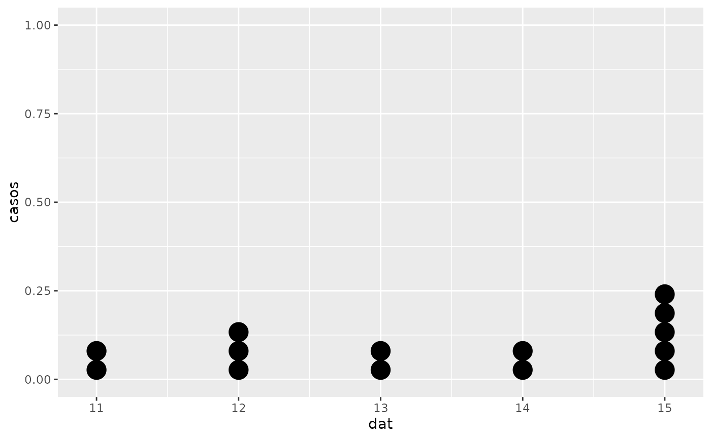
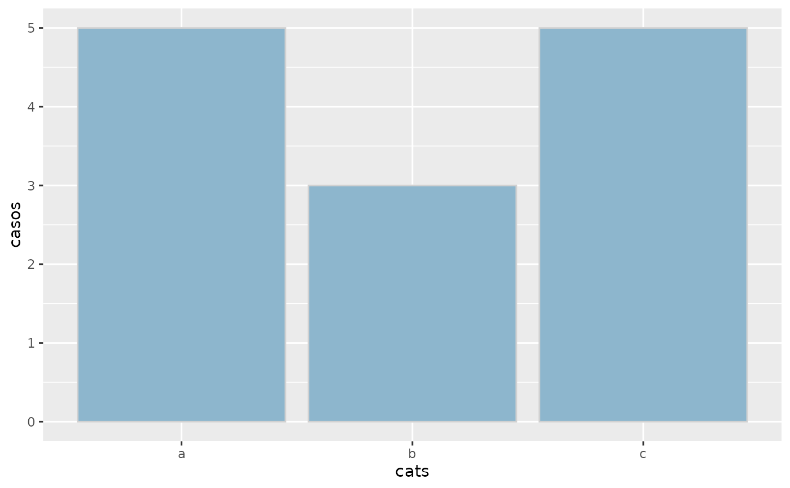
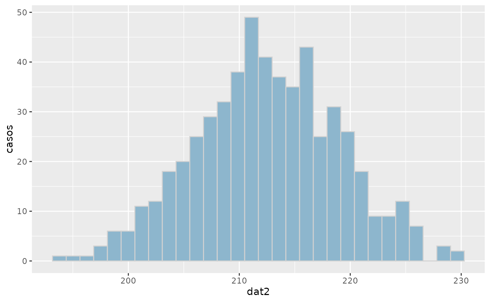
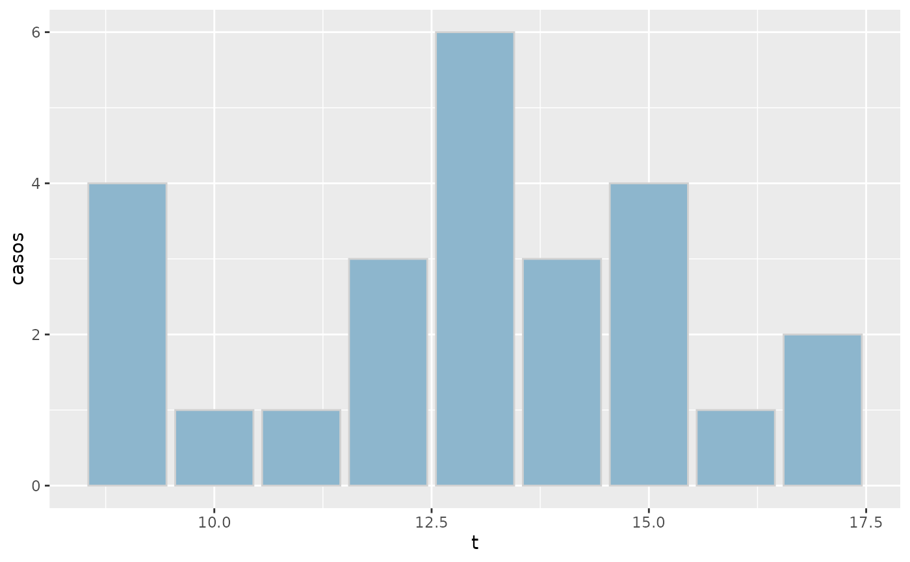
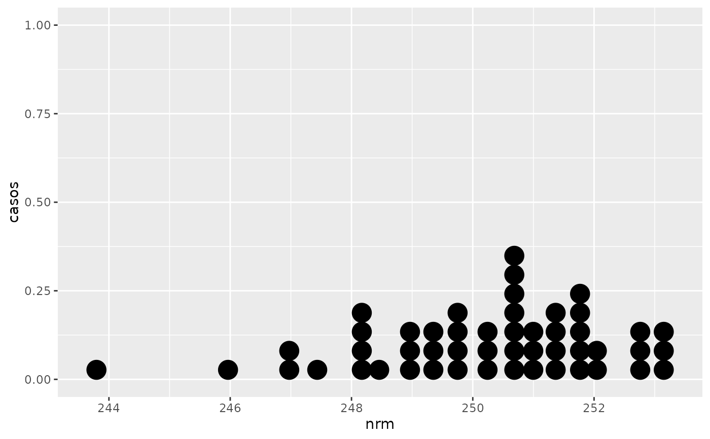
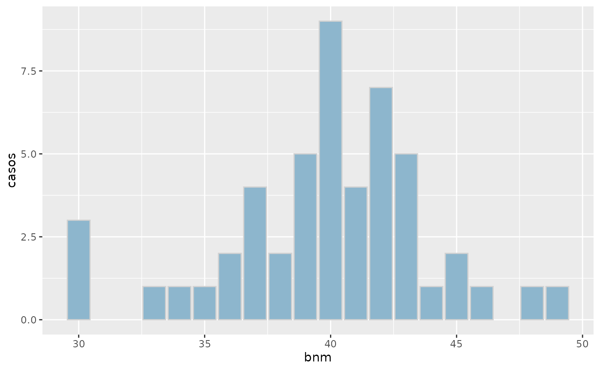

Obtencion de la tabla de frecuencias absolutas y relativas de las categorias de una variable
freq.RdPermite obtener la tabla de frecuencias observadas para un vector de datos x o cada columna de un data.frame x (Texto intencionadamente sin tildes u otros caracteres especiales por la incompatibilidad de los mapas de caracteres).
Arguments
- x
vector: vector o data.frame a describir
- acum
valor logico: TRUE=proporciona la frecuencia relativa acumulada
- cuts
valor entero: numero de intervalos a realizar. Si se omite se utiliza el criterio de Sturges
- agrup
valor logico: si agrup=FALSE no se hace agrupacion en intervalos aunque haya mas de 10 categorias
- decs
valor entero: numero de decimales a mostrar en la salida
- grf
valor logico: si TRUE/FALSE se proporciona/omite salida grafica
- ...
parametros de configuracion de la funcion grpsggp
Value
si x es un vector, se devuelve un data.frame con la tabla de frecuencias. Si x es un data.frame, se muestra la tabla de frecuencias de cada columna, pero la funcion no devuelve ningun objeto
Examples
dat<-c(12,15,13,12,11,14,15,15,15,12,11,13,14,15,NA)
freq(dat)
#>
#> Distribución de frecuencias
#> --------------------------------
#> Variable: dat
#> Valores faltantes: 1
#> n= 14
#>
#> x Freq Prop Prop.Acum
#> 1 11 2 0.143 0.143
#> 2 12 3 0.214 0.357
#> 3 13 2 0.143 0.500
#> 4 14 2 0.143 0.643
#> 5 15 5 0.357 1.000

cats<-c('a','b','c','b','c','b','c','a','c','c','a','a','a')
freq(cats,acum=FALSE,grf=TRUE)
#>
#> Distribución de frecuencias
#> --------------------------------
#> Variable: cats
#> n= 13
#>
#> x Freq Prop
#> 1 a 5 0.385
#> 2 b 3 0.231
#> 3 c 5 0.385

dat2<-rnorm(550,212.3,6.3)
freq(dat2, agrup=TRUE,cuts=5)
#>
#> Distribución de frecuencias
#> --------------------------------
#> Variable: dat2
#> n = 550
#>
#> x Freq Prop Prop.Acum
#> 1 (192,200] 17 0.031 0.031
#> 2 (200,208] 130 0.236 0.267
#> 3 (208,216] 258 0.469 0.736
#> 4 (216,224] 128 0.233 0.969
#> 5 (224,232] 17 0.031 1.000

t<-rbinom(25,20,0.65)
freq(t,agrup=FALSE,cuts=5,decs=2)
#>
#> Distribución de frecuencias
#> --------------------------------
#> Variable: t
#> n= 25
#>
#> x Freq Prop Prop.Acum
#> 1 9 4 0.16 0.16
#> 2 10 1 0.04 0.20
#> 3 11 1 0.04 0.24
#> 4 12 3 0.12 0.36
#> 5 13 6 0.24 0.60
#> 6 14 3 0.12 0.72
#> 7 15 4 0.16 0.88
#> 8 16 1 0.04 0.92
#> 9 17 2 0.08 1.00

nrm<-rnorm(50,250,2)
bnm<-rbinom(50,80,0.5)
df<-data.frame(nrm,bnm)
freq(nrm)
#>
#> Distribución de frecuencias
#> --------------------------------
#> Variable: nrm
#> n = 50
#>
#> x Freq Prop Prop.Acum
#> 1 (242,244] 1 0.02 0.02
#> 2 (244,246] 1 0.02 0.04
#> 3 (246,248] 8 0.16 0.20
#> 4 (248,250] 13 0.26 0.46
#> 5 (250,252] 21 0.42 0.88
#> 6 (252,254] 6 0.12 1.00
 freq(bnm,agrup=TRUE,grf=TRUE)
#>
#> Distribución de frecuencias
#> --------------------------------
#> Variable: bnm
#> n = 50
#>
#> x Freq Prop Prop.Acum
#> 1 (30,33] 1 0.02 0.02
#> 2 (33,36] 4 0.08 0.10
#> 3 (36,39] 11 0.22 0.32
#> 4 (39,42] 20 0.40 0.72
#> 5 (42,45] 8 0.16 0.88
#> 6 (45,48] 2 0.04 0.92
#> 7 (48,51] 1 0.02 0.94
freq(bnm,agrup=TRUE,grf=TRUE)
#>
#> Distribución de frecuencias
#> --------------------------------
#> Variable: bnm
#> n = 50
#>
#> x Freq Prop Prop.Acum
#> 1 (30,33] 1 0.02 0.02
#> 2 (33,36] 4 0.08 0.10
#> 3 (36,39] 11 0.22 0.32
#> 4 (39,42] 20 0.40 0.72
#> 5 (42,45] 8 0.16 0.88
#> 6 (45,48] 2 0.04 0.92
#> 7 (48,51] 1 0.02 0.94
 freq(df,acum=FALSE,grf=TRUE,hnmin=60)
#>
#> Distribución de frecuencias
#> --------------------------------
#>
#> Variable: nrm
#> n = 50
#>
#> x Freq Prop
#> 1 (242,244] 1 0.02
#> 2 (244,246] 1 0.02
#> 3 (246,248] 8 0.16
#> 4 (248,250] 13 0.26
#> 5 (250,252] 21 0.42
#> 6 (252,254] 6 0.12
freq(df,acum=FALSE,grf=TRUE,hnmin=60)
#>
#> Distribución de frecuencias
#> --------------------------------
#>
#> Variable: nrm
#> n = 50
#>
#> x Freq Prop
#> 1 (242,244] 1 0.02
#> 2 (244,246] 1 0.02
#> 3 (246,248] 8 0.16
#> 4 (248,250] 13 0.26
#> 5 (250,252] 21 0.42
#> 6 (252,254] 6 0.12

#>
#> Variable: bnm
#> n = 50
#>
#> x Freq Prop
#> 1 (30,33] 1 0.02
#> 2 (33,36] 4 0.08
#> 3 (36,39] 11 0.22
#> 4 (39,42] 20 0.40
#> 5 (42,45] 8 0.16
#> 6 (45,48] 2 0.04
#> 7 (48,51] 1 0.02
